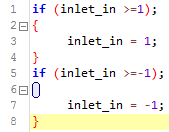

Hi there, so bascially im just trying to make the simplest of hardclip distortion, that being:
If input >= 1
input = 1
If input >=-1
input = -1
Ive run into an error that i really have no idea about., here is the actual code

and this is what im getting in console
Can anybody help me out ? ive tried assigning the input into a variable to use that instead of inlet_in, but i couldnt work out what data type to call it, all of the ones i used pulled up even more error messages.